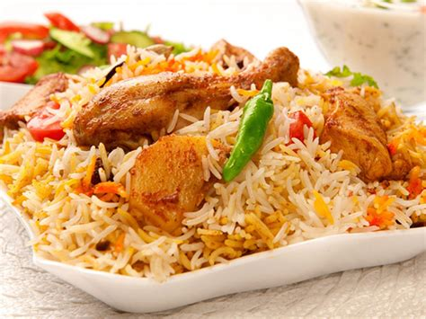

Chicken Biryani

Description
Chicken biryani is a delicious Pakistani/Indian rice dish that's typically reserved for special occasions such as weddings, parties, or holidays such as Ramadan. It has a lengthy preparation, but the work is definitely worth it. For biryani, basmati rice is the ideal variety to use.
Ingredients
- 3 pounds boneless, skinless chicken pieces cut into chunks
- 2 large onions, finely chopped
- 6 tablespoons vegetable oil, divided
- 2 tablespoons ginger-garlic paste
- 2 tablespoons plain yogurt, chopped fresh mint leaves
- 3 teaspoon salt
- 1/2 teaspoon chilli powder, ground black pepper, ground cardamom
- 3 inch cinnamon stick
- 1 pound basmati rice
- 5 pods cardamom
- 3 whole cloves
- 1 pinch powdered saffron
- 1 teaspoon ground cumin
Steps
- Heat 2 tablespoons of oil in a large skillet.
- Add onions, garlic, and fresh ginger; cook and stir until onion is soft and golden.
- Add salt, cumin, chili powder, and pepper; cook, stirring constantly, for 5 minutes.
- Stir in yogurt, mint, ground cardamom, and cinnamon stick. Cover and cook over low heat. It may be necessary to add a little hot water if mixture becomes too dry and starts to stick to the pan.
- Add chicken and stir well to coat. Cover and cook over very low heat until chicken is tender, 35 to 45 minutes.
- There should only be a little very thick gravy left when chicken is finished cooking. If necessary cook uncovered for a few minutes to reduce the gravy.
- Meanwhile, make the rice: Wash rice well and drain in a colander for at least 30 minutes.
- Heat oil in a large skillet. Add onion; cook and stir until golden.
- Add cardamom pods, cloves, cinnamon stick, ground ginger, and saffron; stir in rice until coated with spices.
- Heat water and salt in a medium pot until hot; pour over rice and stir well.
- Add chicken mixture; stir gently to combine. Bring to a boil.
- Reduce heat to very low, cover with a tight-fitting lid, and steam for 20 minutes without lifting the lid or stirring.